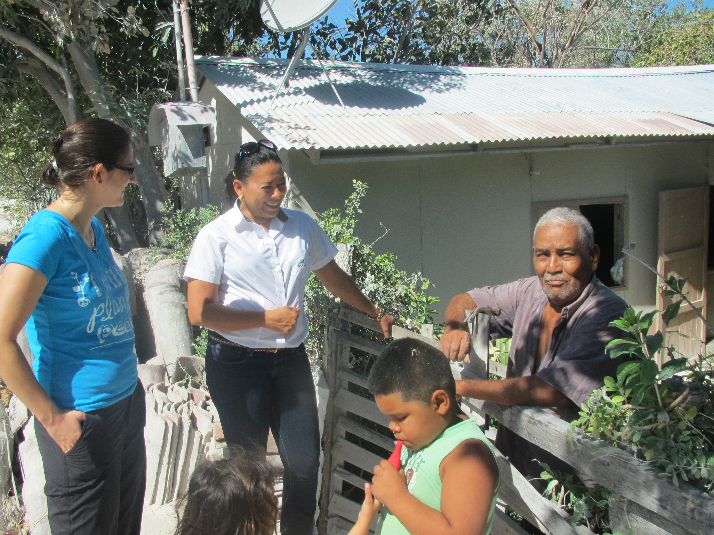
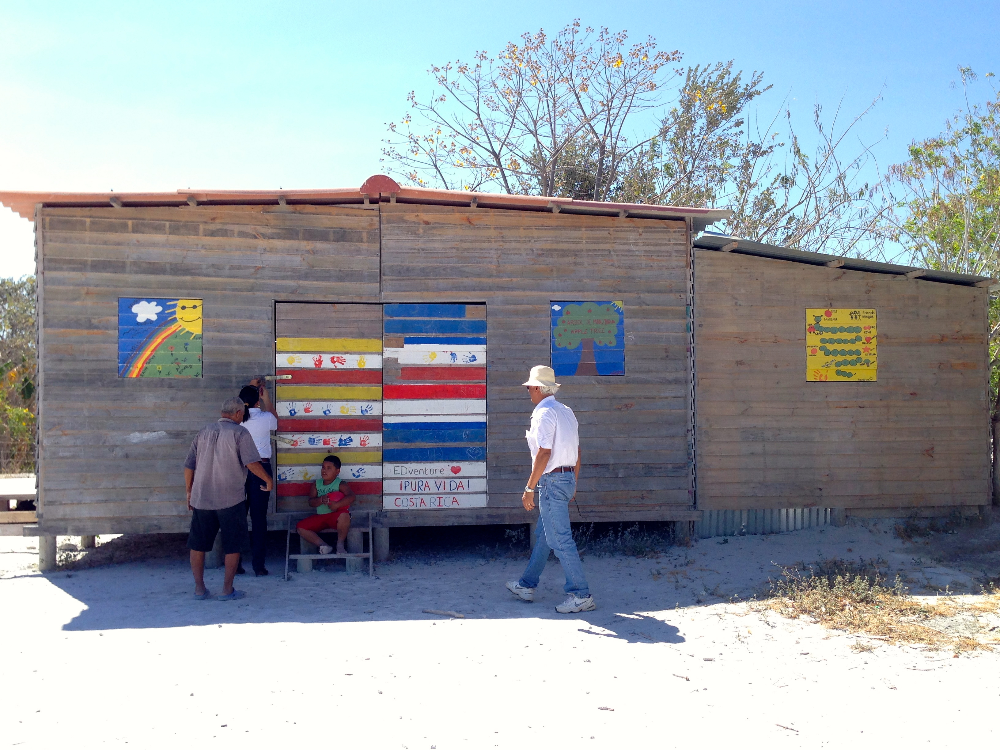
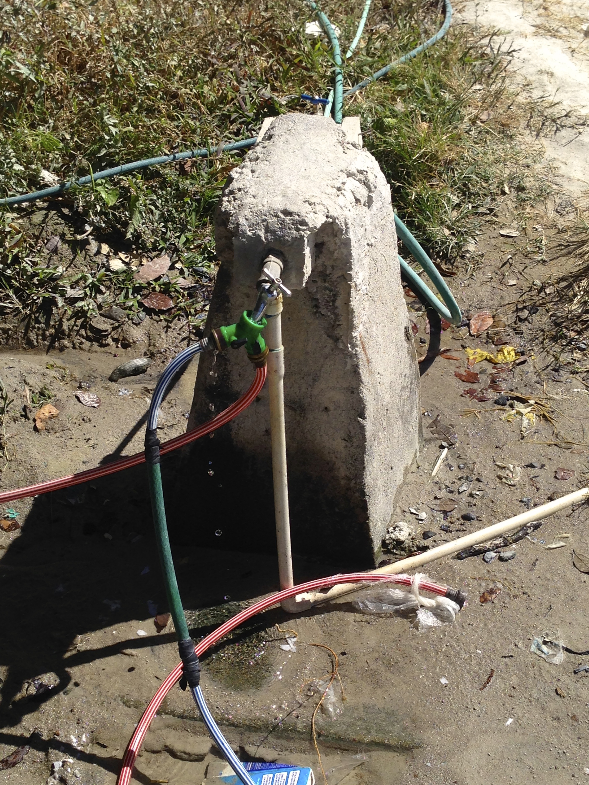
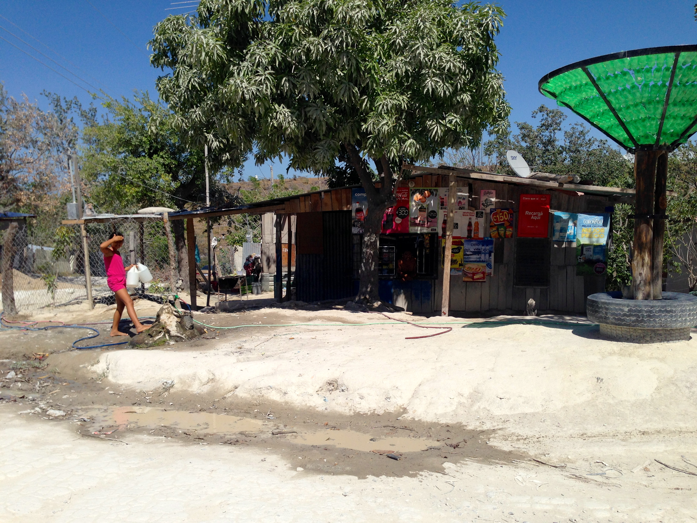
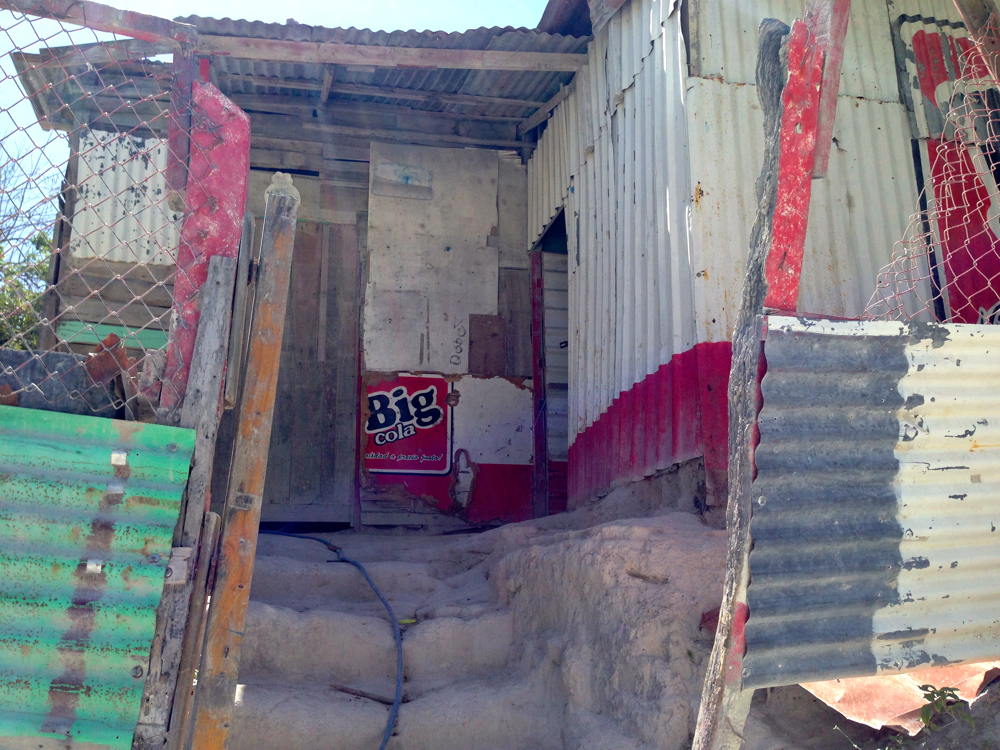

This blog post was written by Assistant GSF Faculty Ana Laura Dengo, who recently visited the site of the GSF Program Fieldwork with Faculty member BK Singh and Assistant Faculty Jholenny Córdoba Chaves.
 Assistant Faculty Ana and Jholenny talking with community membersGreetings! We are so excited about the upcoming summer program in Costa Rica!
We have already started scouting the community where we will be doing fieldwork, and for which the fellows of this program will design sustainable development plans. The Martina Bustos community was chosen as the site for fieldwork because it exemplifies many of the development challenges that very poor societies face on a daily basis. We hope that this program is not just a learning opportunity for the fellows and faculty (although that is valuable in itself), but also an opportunity to contribute to the positive growth of the community by helping to create a sustainable development plan.
 Community centerOur first visit to the Martina Bustos community confirmed the importance of a hands-on approach to learning and planning. In a prior report, we had said, based on available literature, that most of the community lacks electric power and transportation services; however, during our visit we learned that most of the community has access to electricity and that there is an hourly bus service. Whether community members are able to afford the bus fees on a regular basis remains to be explored.
We also witnessed that there is much work to be done to improve the living conditions in this community. Waste management services are non-existent in the area, which is evident on the side of the roads. The access to water is very limited, to the point where there are only a few common faucets that supply water to the neighbors. To my understanding, none of the houses have indoor bathrooms or plumbing for disposal of wastes.
  Common faucetsIt should also be mentioned that most of the houses are made out of tin (�zinc sheets�) and some of the neighbors live in wooden cubicle homes that the non-profit organization TECHO built for them.
 Tin homesA very interesting fact provided to us by a community leader is that not all families that are offered a cubicle home accept one. The reasons why they do not accept this help are unclear to us at this moment, but it reminds us that even when people and/or organizations have the best intentions to help others:
- There are no �one-size-fits-all� solutions
- Sometimes people do not want to be helped or fear change
- Taking the time to get to know the community and its members is crucial in designing interventions that are priority-based
- Involvement and empowerment of community members is key for the success of sustainable development plans
I am certain that the interaction between fellows, faculty and community members will result in many more insights than the few that I have provided here, and that the pilot GSF Program will be a significant experience for all. We look forward to meeting everyone soon!
Regards from Costa Rica!